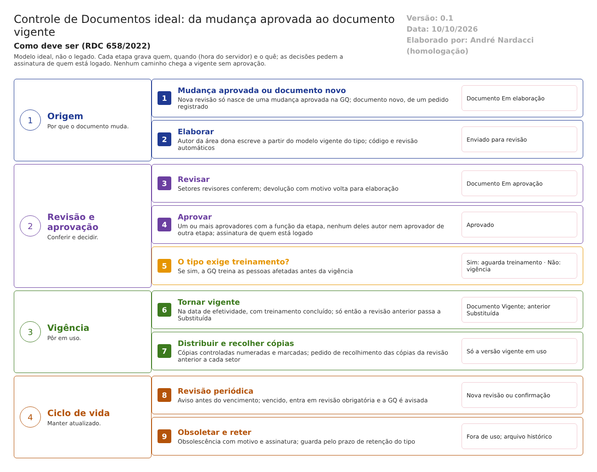

O ideal. Como o Controle de Documentos deve trabalhar para atender à RDC 658/2022 e ao Guia 33/2020. Este documento não descreve o legado. Usa o que foi levantado no código só para mostrar o que manter, o que corrigir e o que construir. Complementa modelo-ideal/01-qualidade-entre-modulos.md: a trava 6 (só pessoa treinada executa a etapa) e a trava 8 (mudança aprovada antes de implementar, com versão). Versão 0.1, de 10/10/2026, para validação com a Garantia da Qualidade.
1. O papel do Controle de Documentos no ERP
O módulo garante que todos trabalhem pela versão aprovada e vigente de cada procedimento, instrução, especificação, método e formulário (RDC 658/2022, arts. 114 a 128).
No modelo ideal, o documento vigente não é só um arquivo guardado. Os outros módulos o consultam no momento do uso: - o CQ, para o método de análise; - a Produção, para a instrução e a fórmula; - a GQ, para o treinamento e a mudança.
Quando uma versão sai de uso, ela some das escolhas de todos os módulos no mesmo instante, e as cópias em papel são recolhidas.
| O Controle de Documentos faz | O Controle de Documentos não faz |
|---|---|
| Controla a elaboração, a revisão, a aprovação e a vigência de cada documento, com versão | Aprovar a mudança que motiva uma nova revisão (é da GQ, trava 8) |
| Distribui cópias controladas e cobra o recolhimento das antigas | Treinar as pessoas (é da GQ; o módulo só espera o treinamento concluído) |
| Cobra a revisão periódica e retira de uso o que vence ou fica obsoleto | Decidir o conteúdo técnico do documento (é da área dona) |
| Guarda os documentos pelo prazo de retenção de cada tipo | |
| Controla os documentos externos (normas, farmacopeias, documentos de clientes e fornecedores) |
2. Como o trabalho anda

O documento passa por estas situações, nesta ordem. Ele não pula etapas e não volta sem registro:
| Situação do documento | Quem leva a ela | Pode ser usado? |
|---|---|---|
| Em elaboração | Autor, a partir de uma mudança aprovada (nova revisão) ou de um pedido de documento novo | Não |
| Em revisão | Autor, ao enviar; os setores revisores conferem | Não |
| Em aprovação | Revisores, ao concluir; um ou mais aprovadores, cada um com assinatura | Não |
| Aprovado, aguardando treinamento | Último aprovador, com assinatura | Não |
| Vigente | Sistema, na data de efetividade, com o treinamento concluído quando o tipo exigir | Sim |
| Substituído | Sistema, no instante em que a nova revisão fica vigente | Não; cópias recolhidas |
| Obsoleto | Responsável pela vigência, com motivo e assinatura | Não; cópias recolhidas |
| Cancelado | Autor ou aprovador, com motivo, antes da vigência | Não |
Regras que valem para todos os caminhos: - Nenhum caminho leva a Vigente sem pelo menos uma aprovação com assinatura de quem não é o autor. - A versão anterior só passa a Substituída quando a nova fica Vigente. Nunca há momento sem versão vigente. - As datas de cada decisão vêm do servidor. A data de efetividade pode ser futura, nunca passada sem justificativa aprovada.
3. As funções do Controle de Documentos ideal
Ação: Manter = o legado já faz como deve; Corrigir = existe, mas não atende; Construir = não existe.
| # | Função | Referência | Ação | Como deve funcionar | No legado hoje |
|---|---|---|---|---|---|
| 1 | Tipos de documento definidos e controlados no sistema | Arts. 114 e 117 | Corrigir | Cada tipo define o caminho de aprovação (com ao menos uma aprovação), a codificação, o prazo de revisão periódica, o prazo de retenção e se exige treinamento. Mudança no tipo tem histórico. Documentos legados entram só por migração controlada, com o original assinado anexado | O caminho pode ficar sem nenhuma aprovação; o ciclo básico (arquivos e modelos) e o legado levam a vigente sem aprovação |
| 2 | Aprovação por pessoas autorizadas, com assinatura e data | Art. 119 | Corrigir | Revisores e aprovadores definidos por função e por etapa. Quem elaborou não aprova; quem pré-aprovou não faz a aprovação final. A função e a separação são conferidas ao gravar | Uma função por etapa (desenho certo); a separação entre pré-aprovador e aprovador está só na lista |
| 3 | Identificação única e data de efetividade | Art. 119, §§ 1º e 2º | Manter | Código único por tipo, revisão numerada e data de efetividade em cada versão | Codificação automática por tipo e revisão numerada (a confirmar no teste) |
| 4 | Revisão periódica e documento atualizado | Art. 121 | Construir | O sistema avisa o dono antes do vencimento da revisão periódica. Vencido o prazo sem revisão, o documento entra em revisão obrigatória e a GQ é avisada | Validade só no relatório; o alerta do tipo é cadastrado, mas não tem efeito |
| 5 | Impedir o uso de documento obsoleto | Art. 121, parágrafo único | Corrigir | Substituído e obsoleto saem de todas as listas de uso dos outros módulos. Quem só consulta não abre versão fora de uso; o arquivo histórico fica com a GQ | A substituição é feita, mas a lista de consulta mostra qualquer situação pelo filtro |
| 6 | Cópias controladas e reprodução sem erro | Art. 118 | Corrigir | Cada cópia tem número, setor, data de entrega e marca de "cópia controlada" em toda página. Ao substituir ou obsoletar, o sistema pede o recolhimento a cada setor e só fecha quando todas as cópias forem baixadas. Só documento vigente é copiado | Sem recolhimento; marca d'água programada, mas nunca aplicada; cópia de documento ainda não vigente; remoção sem histórico |
| 7 | Histórico de alterações, com motivo | Art. 125 | Corrigir | Toda alteração no documento, no tipo e nas cópias guarda o valor anterior, o novo, quem, quando e o motivo. O histórico não pode ser alterado | Histórico do ciclo existe; tipo e cópias sem rastro completo; tabelas do histórico fora do projeto de banco |
| 8 | Registro no momento da ação | Art. 124 | Corrigir | Datas de decisão do servidor. Emissão retroativa só com justificativa aprovada | Datas das decisões do servidor (manter); emissão e validade digitadas |
| 9 | Integridade e disponibilidade dos arquivos | Arts. 116 e 126 | Corrigir | O arquivo aprovado é guardado em formato que não se altera (PDF), com verificação de integridade, cópia de segurança e acesso só pelo sistema | Arquivos na nuvem, ligados ao documento pela chave do anexo (a verificar com a TI) |
| 10 | Prazo de retenção dos documentos | Art. 128 | Construir | Prazo por tipo; o sistema impede o descarte antes do prazo e avisa quando ele termina | Não existe |
| 11 | Revisão ligada a uma mudança aprovada | Art. 8º, XII | Construir | Nova revisão só nasce de uma mudança aprovada na GQ, ligada a ela. Ao ficar vigente, o sistema avisa a GQ para encerrar a ação da mudança | Nova revisão livre, sem mudança; não confere se a origem está vigente |
| 12 | Treinamento antes de o documento valer | Art. 39 | Corrigir | Quando o tipo exige, o documento fica "Aprovado, aguardando treinamento" até a GQ informar o treinamento concluído das pessoas afetadas | Conferência programada, mas desligada no código |
| 13 | Assinatura eletrônica nas decisões | Guia 33, 9.3.2.3 | Corrigir | Toda decisão (revisar, aprovar, pôr em vigor, obsoletar, aprovar documento externo) pede a senha de quem está logado, junto da gravação, e grava o significado da assinatura e a hora do servidor | Senha pedida na revisão, aprovação e obsolescência; ausente no legado e no documento externo; sem o significado da assinatura |
4. Integrações com os outros módulos
Todas as integrações seguem o requisito 16 do documento 01: quando falham, avisam e não deixam a operação pela metade.
| Com | O Controle de Documentos recebe | O Controle de Documentos envia | Quando | Trava |
|---|---|---|---|---|
| Garantia da Qualidade | Mudança aprovada (abre a nova revisão); treinamento concluído das pessoas afetadas | Documento aprovado aguardando treinamento; documento vigente (encerra a ação da mudança); revisão periódica vencida | Na mudança; na aprovação; na vigência | 6, 8 |
| Controle da Qualidade | — | Métodos e especificações vigentes, com versão | Ao escolher o método | 8 |
| Produção | — | Instruções e fórmulas vigentes, com versão; aviso de substituição | Ao abrir a ordem e cada etapa | 8 |
| Estoque e demais módulos | — | Procedimentos vigentes para consulta | No uso | — |
| Principal | Usuários, áreas, funções, equipamentos, empresas e assinatura eletrônica | — | Em cada gravação | — |
5. Quem faz o quê no Controle de Documentos
| Função | Pode | Não pode |
|---|---|---|
| Autor (área dona) | Elaborar o documento e enviar para revisão; abrir nova revisão a partir de uma mudança aprovada | Aprovar o próprio documento |
| Revisor (setores revisores) | Conferir e devolver com motivo | Aprovar o documento que revisou (a validar) |
| Aprovador (uma ou mais etapas) | Aprovar ou devolver, com assinatura | Aprovar em duas etapas do mesmo documento |
| Responsável pela vigência (normalmente a GQ) | Pôr em vigor, obsoletar com motivo, controlar cópias e recolhimento | Pôr em vigor documento sem aprovação ou sem treinamento exigido |
| Administrador de documentos | Configurar tipos e caminhos (com histórico); migrar legado com o original anexado | Pular etapas do caminho |
| Usuário | Consultar e imprimir o documento vigente, como cópia não controlada | Abrir versões fora de uso |
A função é conferida no servidor, em toda gravação, e não só na tela (documento 01, requisito 15). Toda decisão pede assinatura eletrônica (requisito 14).
6. O que manter do legado
O que o código mostra que já funciona como deve e vale a pena levar para a nova versão (a confirmar nos testes):
- O ciclo principal com uma etapa por função (revisão, pré-aprovação, aprovação, vigência) e o caminho configurável por tipo.
- A senha na decisão de revisar, aprovar e obsoletar, com justificativa na devolução e na obsolescência.
- O histórico do ciclo do documento ("CRIAÇÃO DO DOCUMENTO", "DEVOLVIDO", "SUBSTITUÍDO"), com o relatório.
- A substituição automática da revisão anterior na vigência. Corrigir só a ordem: substituir depois de confirmar a nova.
- As datas das decisões vindas do servidor.
- A ligação com os programas de treinamento da GQ, já modelada. Basta ligar a conferência.
- A exigência de anexo final para pôr em vigor e o bloqueio da exclusão de tipo com documento ativo.
- Uma única regra de vigência, no lugar das duas implementações atuais.
7. Pontos para validar com a Garantia da Qualidade
- Se algum tipo de documento pode dispensar a aprovação (por exemplo, formulários em branco). Pela norma, não.
- Quantos níveis de aprovação cada tipo exige e se o revisor pode ser também aprovador.
- O prazo de revisão periódica e o de retenção de cada tipo.
- Como as cópias em papel são recolhidas hoje e quem dá a baixa.
- Se o documento legado ainda será migrado e por quem.
- Se a nova revisão sempre nasce de uma mudança, ou se a revisão periódica sem alteração de conteúdo dispensa a mudança.
O que a ANVISA pede: textos citados
Texto literal das normas citadas em cada tema, extraído dos arquivos da pasta Documentação/ (RDC nº 658/2022 em português e Guia nº 33/2020) por homologacao/ferramentas/citar_normas_diagnostico.py. "(...)" marca trechos omitidos. No portal, clique na referência de cada tema para ver o texto.
Tema 1 · Tipos de documento definidos e controlados no sistema
RDC 658/2022, art. 114
Art. 114. A documentação constitui parte essencial do Sistema de Gestão da Qualidade Farmacêutica, sendo fundamental para operar em conformidade com os requisitos das Boas Práticas de Fabricação.
§ 1º Os vários tipos de documentos e mídias utilizados devem ser totalmente definidos no Sistema de Gestão da Qualidade Farmacêutica do fabricante.
§ 2º A documentação pode existir em uma variedade de formas, incluindo mídia impressa, eletrônica ou fotográfica.
§ 3º O principal objetivo do sistema de documentação utilizado deve ser estabelecer, controlar, monitorar e registrar todas as atividades que, direta ou indiretamente, afetam todos os aspectos da qualidade dos medicamentos.
§ 4º A documentação que constitui o Sistema de Gestão da Qualidade Farmacêutica deve incluir detalhes instrutivos suficientes para facilitar o entendimento comum dos requerimentos, além de permitir o registro satisfatório dos vários processos e a avaliação de quaisquer observações, para que a aplicação contínua dos requisitos possa ser demonstrada.
RDC 658/2022, art. 117
Art. 117. Todos os tipos de documentos devem ser definidos e cumpridos.
§ 1º Os requisitos devem ser igualmente aplicados a todos os tipos de mídia de documento.
§ 2º Sistemas complexos precisam ser compreendidos, bem documentados, validados e controles adequados devem estar presentes.
§ 3º Os documentos (instruções e registros) podem existir de forma híbrida, possuindo elementos eletrônicos e em papel.
§ 4º Medidas de controle e de relação para documentos mestres, cópias oficiais, manuseio de dados e registros precisam ser definidos para sistemas híbridos e homogêneos.
§ 5º Devem ser implementados controles apropriados para documentos eletrônicos, como modelos, formulários e documentos mestre.
§ 6º Durante todo o período de retenção, devem existir controles apropriados para garantir a integridade do registro.
Tema 2 · Aprovação por pessoas autorizadas, com assinatura e data
RDC 658/2022, art. 119
Art. 119. Os documentos contendo instruções devem ser aprovados, assinados e datados por pessoas apropriadas e autorizadas.
§ 1º Os documentos devem ter conteúdo não ambíguo e identificação única.
§ 2º A data de efetividade dos documentos deve ser definida.
Tema 3 · Identificação única e data de efetividade
RDC 658/2022, art. 119
Art. 119. Os documentos contendo instruções devem ser aprovados, assinados e datados por pessoas apropriadas e autorizadas.
§ 1º Os documentos devem ter conteúdo não ambíguo e identificação única.
§ 2º A data de efetividade dos documentos deve ser definida.
Tema 4 · Revisão periódica e documento atualizado
RDC 658/2022, art. 121
Art. 121. Os documentos relacionados ao Sistema de Gestão da Qualidade Farmacêutica devem ser revisados regularmente e mantidos atualizados.
Parágrafo único. Quando um documento for revisado, os sistemas devem operar de forma a impedir o uso inadvertido de documentos obsoletos.
Tema 5 · Impedir o uso de documento obsoleto
RDC 658/2022, art. 121
Art. 121. Os documentos relacionados ao Sistema de Gestão da Qualidade Farmacêutica devem ser revisados regularmente e mantidos atualizados.
Parágrafo único. Quando um documento for revisado, os sistemas devem operar de forma a impedir o uso inadvertido de documentos obsoletos.
Tema 6 · Cópias controladas e reprodução sem erro
RDC 658/2022, art. 118
Art. 118. Os documentos devem ser projetados, preparados, revisados e distribuídos com cuidado.
§ 1º Os documentos devem estar em conformidade com as partes relevantes dos arquivos de especificação do produto, de fabricação e dos dossiês de registro, conforme apropriado.
§ 2º A reprodução de documentos de trabalho a partir de documentos mestres não deve permitir a ocorrência de erros.
Tema 7 · Histórico de alterações, com motivo
RDC 658/2022, art. 125
Art. 125. Toda a alteração feita no registro de um documento deve ser assinada e datada, devendo permitir a leitura da informação original.
Parágrafo único. Quando apropriado, o motivo da alteração deve ser registrado.
Tema 8 · Registro no momento da ação
RDC 658/2022, art. 124
Art. 124. Os registros devem ser realizados ou completados sempre que uma ação for realizada e de modo a permitir que todas as atividades significativas relativas à fabricação de medicamentos sejam rastreáveis.
Tema 9 · Integridade e disponibilidade dos arquivos
RDC 658/2022, art. 116
Art. 116. Devem ser implementados controles adequados para garantir a precisão, integridade, disponibilidade e legibilidade dos documentos.
§ 1º Os documentos de instrução devem estar livres de erros e disponíveis por escrito.
§ 2º O termo "escrito" significa registrado ou documentado em mídia a partir da qual os dados podem ser processados em um formato legível.
RDC 658/2022, art. 126
Art. 126. Deve ser claramente definido com qual registro cada atividade de fabricação está relacionada e onde este registro está localizado.
Parágrafo único. Devem existir controles seguros e, se necessário, validados, de forma a garantir a integridade do registro durante todo o período de retenção.
Tema 10 · Prazo de retenção dos documentos
RDC 658/2022, art. 128
Art. 128. O período de retenção de outros tipos de documentos deve ser definido de acordo com a sua finalidade de suporte.
§ 1º A documentação crítica, incluindo dados brutos (por exemplo, relacionados com validação ou estabilidade), a qual suporta informações de registro, deve ser mantida enquanto a autorização permanecer em vigor.
§ 2º A obsolescência e a posterior não retenção de dados, como por exemplo estudos de validação e estabilidade, que tenham sido substituídos por um conjunto completo de novos dados é aceitável desde que a documentação não tenha determinação temporal de retenção em vigor por força de estar relacionada a um lote comercial.
Tema 11 · Revisão ligada a uma mudança aprovada
RDC 658/2022, art. 8º
Art. 8º Um Sistema da Qualidade Farmacêutica adequado à fabricação de medicamentos deve garantir que:
(...)
XII - estejam implementados procedimentos para a avaliação prospectiva de mudanças planejadas e sua aprovação antes da implementação, levando-se em consideração as notificações e aprovações regulatórias, quando necessário;
(...)
Tema 12 · Treinamento antes de o documento valer
RDC 658/2022, art. 39
Art. 39. O fabricante deve fornecer treinamento para todo o pessoal cujas funções sejam exercidas nas áreas de produção e armazenamento ou laboratórios de controle (incluindo o pessoal técnico, de manutenção e limpeza) e para outras pessoas cujas atividades possam afetar a qualidade do
produto.
Tema 13 · Assinatura eletrônica nas decisões
Guia nº 33/2020, item 9.3.2.3 (Requisitos Operacionais)
Funções – são os requisitos funcionais que habilitam o sistema a executar o processo de negócio que está sendo automatizado, tais como: - (...) - Utilização de assinaturas eletrônicas; - (...)